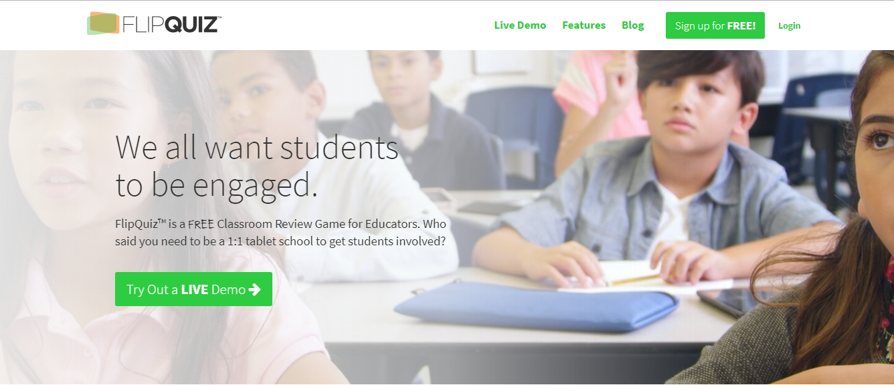
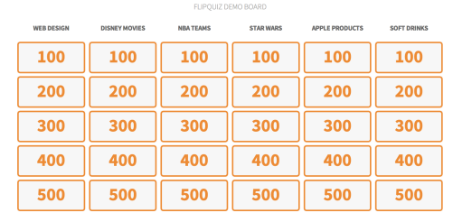
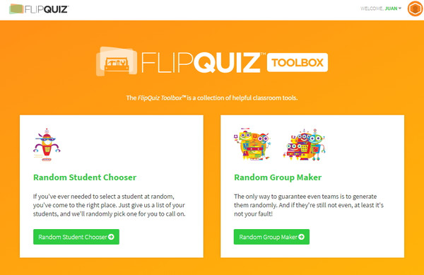

Fase cuatro. Evaluación del alumnado

Os presento Flipquiz, una herramienta interactiva gracias a la cual vais a comprobar el nivel de comprensión de vuestros alumnos de los contenidos sobre la oración simple.
Así, mediante la confección flashcards (en las cuales podéis adjuntar enlaces, vídeos e imágenes), los alumnos recibirán puntos de 100 a 500.
Las preguntas, se pueden extraer de trabajos realizados ya por otras personas en "Discover Boards" o mediante la elaboración de uno propio a través de la opción "Create a Quiz".

A la hora de responder a la distintas cuestiones planteadas, podemos inclinarnos por la opción de seleccionar alumnos de forma aleatoria o, por el contrario, formar grupos de alumnos mediante una lista que hayamos introducido con anterioridad.

Todo ello lo podéis realizar de manera totalmente gratuita o con la versión de pago.
De la misma manera, Flipquiz lo podéis usar en combinación con la herramienta Classdojo para repasar antes de un examen por medio de los siguientes pasos:
Confeccionáis un panel, en este caso, sobre el sujeto y sus tipos. Ejemplo.
El alumnado, agrupado por parejas o de forma individual van contestando a las distintas preguntas.
Gracias a Classdojo se van eligiendo los alumnos que deben contestar.
Se responde a la pregunta. Si se acierta suma puntuación y al revés.
Anotación por vuestra parte de las distintas puntuaciones obtenidas.
Victoria por parte del alumnado con mayor puntuación.